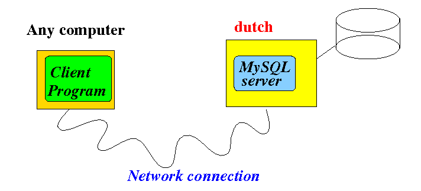
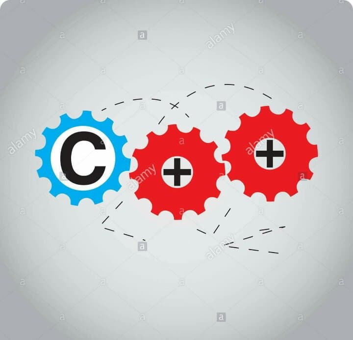
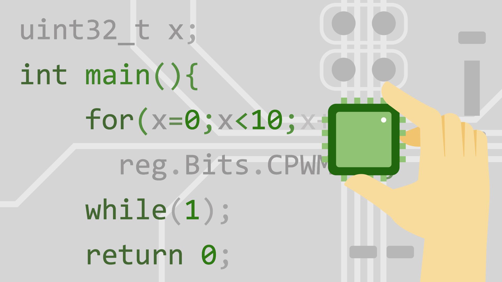

C++ is a middle-level programming language developed by
starting in 1979 at Bell Labs.
C++ runs on a variety of platforms, such as Windows, Mac OS, and the various versions of UNIX.
C++ is a cross-platform language that can be used to create high-performance applications.
C++ gives programmers a high level of control over system resources and memory.
The language was updated 3 major times in 2011, 2014, and 2017 to C++11, C++14, and C++17.
C++ is one of the most popular languages in the world. It is used by some 4.4 million developers worldwide. Also, C++ Developers are quite sought after and they hold some of the most high-paying jobs in the industry with an average base pay of $103, 035 per year.
C++ has the Standard Template Library(STL) that is very useful as it helps in writing code compactly and quickly as required. It contains mainly four components i.e. algorithms, containers, functions, and iterators.
There is a large online community of C++ users and experts that is particularly helpful in case any support is required. There is a lot of resources like GeeksforGeeksetc. available on the internet regarding C++. Some of the other online resources for C++ include StackOverflow, cppreference.com, Standard C++,etc.
There are many modern day databases such as MySQL, MongoDB, MemSQL, etc. that are written in C++. This is because C++ is quite modern and it supports features like exceptions, lambda expressions, etc.
All the major operating systems such as Windows, Linux, Android, Ubuntu, iOS, etc. are written in a combination of C and C++. The Windows applications are written in C++, while Android applications are written in Java along with C/C++ with non-default run-times for C++ support. Also, C++ can be used to develop the core of the applications in iOS.
C++ is closer to the hardware level and is a comparatively low-level language. Because of this reason, it is used in many compilers as a backend programming language. An example of this is the GNU Compiler Collection (GCC)which is currently written mostly in C++ along with C.
A lot of web browsers are developed using C++ such as Chrome, Firefox, Safari, etc. Chrome contains C++ in the rendering engine, JavaScript engine, and the UI. Firefox uses mainly in the rendering engine and a little in the UI. Safari also uses C++ in the rendering engine and JavaScript engine.
Applications requiring graphics such as digital image processing, computer vision, screen recording programs, etc. use C++ due to its high speed. This can also include different games that have graphics as a big part of their structure.
C++ is closer to the hardware level and so it is quite useful in embedded systems as the software and hardware in these are closely coupled. There are many embedded systems that use C++ such as smart watches, MP3 players, GPS systems, etc.
Programs developed in C++ can be moved from one platform to another. This is one of the main reasons that applications requiring multi-platform or multi-device development often use C++.
This tutorial will teach you the basics of C++.
It is not necessary to have any prior programming experience.
Click Here